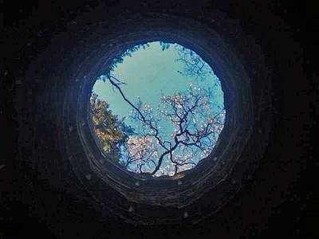

Conversation with 81184027 at Thu 13 Mar 2014 05:55:46 PM CST on 154115835 (webqq)
(05:55:39 PM) 尘土飞扬: @光 收到 谢谢
(05:55:39 PM) 尘土飞扬: @光 收到 谢谢
(05:58:42 PM) 光: 嗯
(06:01:28 PM) 尘土飞扬: 没有读过圣经 每次他拿出耶稣时代的划分 就没法反驳他了 而且还总是以圣经里的故事为全能神的根据 看来仔细研读圣经才行
(06:03:07 PM) 光: (06:01:28 PM) 尘土飞扬: 没有读过圣经 每次他拿出耶稣时代的划分 就没法反驳他了 而且还总是以圣经里的故事为全能神的根据 看来仔细研读圣经才行 //非专业人士，其实不建议针锋相对的辩论的
(06:03:25 PM) 光: 先要考虑好你辩论的目的是什么，要解决什么问题
(06:03:21 PM) 蔚蓝的天空: 周国平的书怎么样
(06:03:33 PM) 光: 挺好的
(06:04:17 PM) 蔚蓝的天空: 今天买了本他的书
(06:04:54 PM) 尘土飞扬: 倒不是想辩论什么 是想能通过圣经的正解把他引导出来 这是不是得专业人士才能做到
(06:05:24 PM) 光: 有难度的
(06:05:42 PM) 光: 可以商讨，不要辩论了
(06:05:44 PM) 尘土飞扬: 嗯
(06:06:00 PM) 蔚蓝的天空: 周国平的人生哲思路
(06:06:10 PM) 蔚蓝的天空: 录、
(06:07:02 PM) 尘土飞扬: 天天在家里就是看那些神话 听那些歌 还做很多笔记 觉得越来越严重了 别的任何书都不接受看
(06:07:21 PM) 光: 尼采. (1986). 悲剧的诞生. (周国平, Trans.). 生活·读书·新知三联书店. Retrieved from http://book.douban.com/subject/1063852/ 周国平. (1986). 尼采：在世纪的转折点上. 上海人民出版社. Retrieved from http://book.douban.com/subject/1079104/ 周国平. (2006). 智慧和信仰. 中国盲文出版社. Retrieved from http://book.douban.com/subject/1813918/ 周国平. (2009a). 只有一个人生. 人民文学出版社. Retrieved from http://book.douban.com/subject/3773959/ 周国平. (2009b). 灵魂只能独行. 人民文学出版社. Retrieved from http://book.douban.com/subject/3740431/
(06:07:50 PM) 蔚蓝的天空: 我会继续读一下他的书
(06:08:06 PM) 光: 嗯
(06:08:58 PM) 光: (06:07:02 PM) 尘土飞扬: 天天在家里就是看那些神话 听那些歌 还做很多笔记 觉得越来越严重了 别的任何书都不接受看 //嗯
(06:08:57 PM) 蔚蓝的天空: 很早以前 看过一本圣哲箴言
(06:09:25 PM) 光: 尘土飞扬 你加我吧，我帮你理理思路
(06:09:39 PM) 尘土飞扬: 我已经加你了
(06:10:34 PM) 光: 嗯
(06:10:44 PM) 光: 你用小窗呼我一下
(06:10:49 PM) 光: 我这里人太多
(06:42:04 PM) 田慧慧-金华: 其实过多物质真的没有必要。比如我现在回娘家武汉照顾生病的妈妈，从衣柜里拿出十多年前妈妈给我买的羽绒服和毛衣，依然很温暖。人不该为生活所累，为欲望所束缚。再多的物质都拯救不了内心的荒芜！
(06:42:27 PM) 光: 嗯
(06:47:34 PM) 福建-福州&水浒: 人心永不满足
(06:50:30 PM) 田慧慧-金华: 唉，看我妈妈病倒在床，我婆家在浙江很难回来照顾。穿着十多年前妈妈给我买的波司登羽绒服，200多元。心里不是滋味。早知道不嫁那么远了。她永远觉得自己的女儿最漂亮最聪明，对我期望很高。交的男朋友没有一个是她满意的。她的爱，让我远走他乡。现在觉得只要父母健康长寿，花多少钱都值得。
(06:53:18 PM) 光: 嗯
(07:14:22 PM) 阿萨汗蛋包飯: 婆家在浙江:pensive:
(07:15:23 PM) 福建-福州&水浒: :pray:
(07:15:28 PM) 福建-福州&水浒: 不惊奇呀
(07:17:16 PM) 福建-福州&水浒: 阿萨汗蛋包飯(
(07:45:12 PM) pastorqi: 3月13日，2014年的第72天。
天天主恩惠,福满溢灵程!
愿我们收获活水吗哪，对神发出感谢赞美
旧约 民 19:-20:
诗 56:
箴 11:8
新约 路1:1-25
(08:45:00 PM) 光: 和合本 (繁體字): 箴言 Chapter 11
詭詐的天平為耶和華所憎惡；公平的法碼為他所喜悅。 驕傲來，羞恥也來；謙遜人卻有智慧。 正直人的純正必引導自己；奸詐人的乖僻必毀滅自己。 發怒的日子資財無益；惟有公義能救人脫離死亡。 完全人的義必指引他的路；但惡人必因自己的惡跌倒。 正直人的義必拯救自己；奸詐人必陷在自己的罪孽中。 惡人一死，他的指望必滅絕；罪人的盼望也必滅沒。 義人得脫離患難，有惡人來代替他。 不虔敬的人用口敗壞鄰舍；義人卻因知識得救。 義人享福，合城喜樂；惡人滅亡，人都歡呼。 城因正直人祝福便高舉，卻因邪惡人的口就傾覆。 藐視鄰舍的，毫無智慧；明哲人卻靜默不言。 往來傳舌的，洩漏密事；心中誠實的，遮隱事情。 無智謀，民就敗落；謀士多，人便安居。 為外人作保的，必受虧損；恨惡擊掌的，卻得安穩。 恩德的婦女得尊榮；強暴的男子得資財。 仁慈的人善待自己；殘忍的人擾害己身。 惡人經營，得虛浮的工價；撒義種的，得實在的果效。 恆心為義的，必得生命；追求邪惡的，必致死亡。 心中乖僻的，為耶和華所憎惡；行事完全的，為他所喜悅。 惡人雖然連手，必不免受罰；義人的後裔必得拯救。 婦女美貌而無見識，如同金環帶在豬鼻上。 義人的心願盡得好處；惡人的指望致干忿怒。 有施散的，卻更增添；有吝惜過度的，反致窮乏。 好施捨的，必得豐裕；滋潤人的，必得滋潤。 屯糧不賣的，民必咒詛他；情願出賣的，人必為他祝福。 懇切求善的，就求得恩惠；惟獨求惡的，惡必臨到他身。 倚仗自己財物的，必跌倒；義人必發旺，如青葉。 擾害己家的，必承受清風；愚昧人必作慧心人的僕人。 義人所結的果子就是生命樹；有智慧的，必能得人。 看哪，義人在世尚且受報，何況惡人和罪人呢？
(08:46:15 PM) 河北-邯郸&格调: 知而不能行，与不知同
(08:49:42 PM) 光: 嗯
(08:55:25 PM) 河北-邯郸&格调: 世界上的人其实都是智障
(08:56:34 PM) 光: 其实只是被欲望蒙蔽了双眼，一叶足以障目
(08:56:33 PM) 埃及无雪: 那是你接触的世界是智障人士
(08:56:57 PM) 埃及无雪: 你要接触正常世界
(08:57:10 PM) 埃及无雪: 你就不会那样说
(08:57:43 PM) 埃及无雪: 如果你不出去走走，你会以为这就是世界。
(08:57:49 PM) 埃及无雪: 
(08:58:06 PM) 埃及无雪: 井底世界
(08:58:06 PM) 河北-邯郸&格调: 有谁能让自己的心静下来
(08:58:25 PM) 河北-邯郸&格调: 去思考
(08:58:36 PM) 埃及无雪: 你自己
(08:58:52 PM) 埃及无雪: 不要什么都指望别人
(09:00:17 PM) 河北-邯郸&格调: 别人指谁？
(09:00:50 PM) 埃及无雪: 若风：有谁能让自己的心静下来
(09:01:03 PM) 埃及无雪: 埃及：你自己
(09:01:50 PM) 河北-邯郸&格调: 有谁，说明没人的意思
(09:01:59 PM) 河北-邯郸&格调: 你能？
(09:02:19 PM) 河北-邯郸&格调: 无雪你理解错我的意思了
(09:02:32 PM) 福建-福州&水浒: :emoji:
(09:02:58 PM) 光: (08:58:06 PM) 河北-邯郸&格调: 有谁能让自己的心静下来 //如果想依靠外力让自己的心静下来，其实永远无法真的安静下来
(09:02:59 PM) 埃及无雪: B-)
(09:03:08 PM) 福建-福州&水浒:
(09:03:12 PM) 埃及无雪: 偶尔静下来就好了
(09:03:16 PM) 河北-邯郸&格调: 那是个问句
(09:03:25 PM) 河北-邯郸&格调: 哎！
(09:03:27 PM) 埃及无雪: 完全静下来，就是死人了B-)
(09:03:42 PM) 福建-福州&水浒: :relieved:
(09:03:45 PM) 埃及无雪: 不好意思，我理解能力有点差B-)B-)
(09:03:53 PM) 福建-福州&水浒:
(09:04:40 PM) 河北-邯郸&格调: 埃及无雪
2014-3-13 21:03:27
完全静下来，就是死人了
(09:05:11 PM) 河北-邯郸&格调: 你做不到，只能说明智障
(09:05:50 PM) 埃及无雪: :dig::dig::dig::dig::dig:
(09:08:55 PM) 埃及无雪: 智障若比“智者”聪明，我选择前者
(09:09:12 PM) 埃及无雪: 智障若比“智者”快乐，我选择前者
(09:09:48 PM) 河北-邯郸&格调: 哈哈
(09:11:25 PM) 埃及无雪: 喜欢无病呻吟，自怨自艾的文人骚客，才是大智障:瓢虫:
(09:12:14 PM) 河北-邯郸&格调: 天道无情
(09:12:38 PM) 埃及无雪: 外面的世界很美好，好好睁大眼睛看看，用心去感受
(09:13:08 PM) 埃及无雪: 前提是自己的心要纯灵
(09:13:22 PM) 河北-邯郸&格调: 你看到的只不过是虚的
(09:13:24 PM) 埃及无雪: 否则感受出来的也是乌七八糟的东西
(09:13:57 PM) 埃及无雪: 那你看到的那些污浊的东西也是虚的啊
(09:14:22 PM) 埃及无雪: 既然都是虚，我们为何不选择美好的“虚”？
(09:15:14 PM) 埃及无雪: 你看到的也是自己内心的映像
(09:17:36 PM) 河北-邯郸&格调: 存在便有道理，随她们去吧
(09:17:39 PM) 埃及无雪: :D:D:D:D
(09:18:50 PM) 埃及无雪: :share::share::share::share:希望你心情能好一点:rose:
(09:18:58 PM) 心理咨询师 雪: 大家晚上好，近期心理状态怎样？
(09:19:06 PM) 河北-邯郸&格调: 大道无形，一切也只不过是成住坏空
(09:22:39 PM) ★樵☆古★: :share::share:
(09:38:27 PM) 阿萨汗蛋包飯: 道就是神